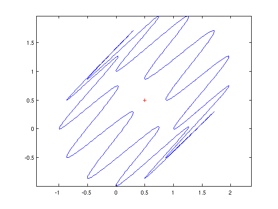

Area and centroid of a 2D region
Stefan Guettel, October 2010
(Chebfun example geom/Area.m)
With Chebfun it is easy to compute with parametrized curves in the plane. For example, the following lines define a curve (x,y) as a pair of chebfuns in the variable t:
t = chebfun('t',[0,2*pi]);
b = 1; m = 7; a = (m-1)*b;
x = (a+b)*cos(t) - b*cos((a+b)/b*t);
y = (a+b)*sin(t) - b*sin((a+b)/b*t);
Such curves are called epicycloids, named by the Danish astronomer Ole Romer in 1674. Epicycloids can be produced by tracing a point on a circle which rolls out on a larger circle. Rømer discovered that cog-wheels with epicycloidal teeth turned with minimum friction. This is what our epicycloid looks like:
LW = 'linewidth'; lw = 1.6; plot(x,y,LW,lw) axis equal

Note that although this curve is not smooth, the functions x(t) and y(t) that parameterize it are smooth, so Chebfun has no difficulty representing them by global polynomials:
x y
x =
chebfun column (1 smooth piece)
interval length endpoint values
[ 0, 6.3] 58 6 6
vertical scale = 7.4
y =
chebfun column (1 smooth piece)
interval length endpoint values
[ 0, 6.3] 54 9.6e-16 -4.7e-18
vertical scale = 7.9
With the following formula we can compute the area enclosed by the curve (x,y):
format long
A = sum(x.*diff(y))
A =
1.759291886010284e+02
Let's compare this result with the exact area of the epicycloid, given (for integer m) by the formula
exact = pi*b^2*(m^2+m)
exact =
1.759291886010284e+02
Here is a more complicated curve (now defined as a single complex-valued chebfun rather than a pair of real-valued chebfuns):
z = exp(1i*t) + (1+1i)*sin(6*t).^2;
plot(z,LW,lw)
axis equal
Because this curve is a perturbed unit circle, with every perturbation occurring twice with opposite signs, the enclosed area should equal pi, as is confirmed by Chebfun:
A = sum(real(z).*diff(imag(z))); [ A ; pi ]
ans = 3.141592653589794 3.141592653589793
We can compute and plot the centroid (or center of mass) of this region as follows:
c = sum(diff(z).*z.*conj(z))/(2i*A); hold on plot(c,'r+',LW,lw)
If you use scissors to produce a piece of paper in this shape, it should remain balanced when placed on a vertical needle centered at the red cross. (If it doesn't, it's likely your handicraft precision isn't as good as Chebfun's!)